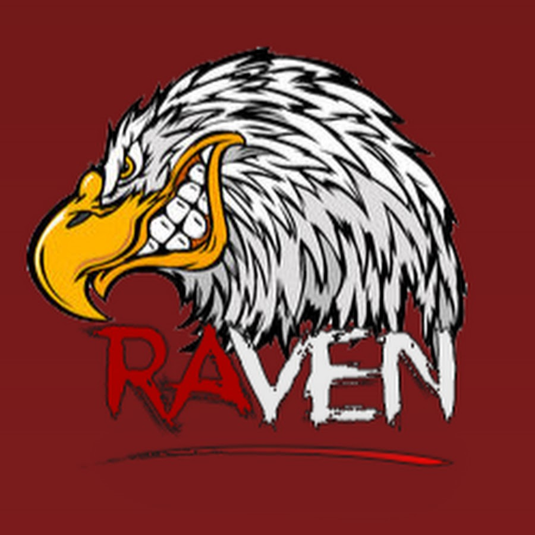

Nouvelle Vidéo de Rust
Krolay

Krolay
Krolay
Raven
Raven
Krolay
Guide Complet pour Progresser dans le Jeu Rust
1. Premiers Pas
a. Création de Personnage
Choisir un serveur : Optez pour un serveur avec un faible ping et une population modérée pour débuter.
Personnalisation : Notez que Rust ne permet pas la personnalisation du personnage ; le sexe et l’apparence sont générés aléatoirement.

b. Collecte de Ressources
Pierres et bois : Utilisez votre pierre initiale pour frapper des rochers et des arbres pour collecter des pierres et du bois.
Nourriture : Cherchez des plantes, chassez des animaux ou trouvez des caisses de provisions pour obtenir de la nourriture.

2. Construction de Base
a. Choisir un Emplacement
Proximité des ressources : Choisissez un endroit près des ressources essentielles (bois, pierres, animaux).
Éviter les zones à haute activité : Les zones très peuplées ou les monuments peuvent être dangereux pour les débutants.
b. Construire une Base
Fondation : Commencez par poser des fondations en bois.
Murs et toit : Ajoutez des murs, une porte et un toit pour protéger votre base.
Placard de construction (Tool Cupboard) : Placez un placard de construction pour réclamer la zone et empêcher d’autres joueurs de construire à proximité.
3. Équipement de Base
a. Outils
Hache en pierre : Utilisez des pierres et du bois pour fabriquer une hache en pierre pour collecter des ressources plus rapidement.
Pique en pierre : Fabriquez une pique en pierre pour extraire des minerais plus efficacement.
b. Armes
Lance en bois : Fabriquez une lance en bois pour vous défendre contre les animaux et les joueurs hostiles.
Arcs et flèches : L’arc est une arme efficace à distance pour la chasse et le combat.
c. Vêtements
Armure en tissu : Collectez du tissu pour fabriquer des vêtements de base qui vous protègeront des éléments et des dégâts.
4. Avancée Technologique
a. Table de Recherche
Plans : Utilisez une table de recherche pour étudier les objets et apprendre à les fabriquer.
Composants : Recherchez des composants spécifiques pour créer des objets avancés.

b. Établis
Etabli niveau 1 : Fabriquez des outils et des armes de base.
Etabli niveau 2 : Permet la création d’objets plus avancés, comme des fusils.
Etabli niveau 3 : Nécessaire pour les armes et équipements les plus sophistiqués.

5. Survie et Stratégie
a. Gestion des Ressources
Stockage : Construisez des coffres pour stocker vos ressources.

Agriculture : Cultivez des plantes pour une source de nourriture stable.

b. Défense
Renforcement de la base : Améliorez votre base avec des matériaux plus solides (métal, pierre).
Pièges et défenses : Installez des pièges et des défenses pour dissuader les intrus.
c. Raids et PvP
Raiding : Préparez-vous à attaquer d'autres bases en fabriquant des explosifs et en planifiant votre attaque.
Combat PvP : Entraînez-vous au combat pour défendre votre base et attaquer efficacement.
6. Interaction Sociale
a. Formation de Groupes
Clans : Rejoignez ou créez un clan pour mutualiser les ressources et la protection.
Alliances : Formez des alliances avec d’autres joueurs pour des avantages mutuels.
b. Communication
Chat vocal et textuel : Utilisez le chat pour communiquer avec les autres joueurs, établir des alliances ou des trêves.
Forums et communautés : Participez aux forums et aux communautés en ligne pour échanger des conseils et des stratégies.
7. Exploration et Monuments
a. Monuments
Loot : Les monuments sont des endroits où vous pouvez trouver des butins précieux.
Radiactivité : Certains monuments sont radioactifs ; assurez-vous d'avoir une protection adéquate.
les carte rouge,bleu,vert se trouvant dans les monuments sera expliquer dans cette vidéo dédié sur le sujet
b. Exploration
Carte : Utilisez la carte pour naviguer et trouver des points d’intérêt.
Nouveaux territoires : Explorez constamment de nouvelles zones pour découvrir des ressources et des opportunités.

Ce guide vous fournira une base solide pour commencer et progresser dans Rust. N'oubliez pas que la survie dans ce jeu repose beaucoup sur l'adaptabilité, la stratégie et l'interaction avec d'autres joueurs. Bonne chance et amusez-vous bien !
Conseils Pratiques pour Améliorer les Performances dans Rust
1. Maîtriser les Bases de la Survie
a. Collecte Efficace des Ressources
- Utilisez les bons outils : Une hache en pierre est idéale pour récolter du bois, tandis qu'une pioche est meilleure pour miner des rochers.
- Optimisez votre temps : Concentrez-vous sur la collecte des ressources essentielles comme le bois, la pierre, et le métal dès le début.
b. Gestion de la Nourriture et de l'Eau
- Chassez les animaux : Les cerfs, les sangliers et les poules sont de bonnes sources de viande.
- Cueillez des plantes : Recherchez des baies et d'autres plantes comestibles.
- Utilisez les ruisseaux et les lacs : Buvez de l'eau propre et stockez-la pour plus tard.
2. Construction de Base
a. Choisir un Emplacement Stratégique
- Proximité des ressources : Construisez votre base près des ressources essentielles.
- Évitez les zones à haute activité : Les zones très peuplées augmentent le risque de raids.
b. Renforcement de la Base
- Utilisez des matériaux solides : Améliorez votre base avec du bois, de la pierre, et du métal.
- Placez un placard de construction : Cela empêche les autres joueurs de construire près de votre base.
c. Dispositifs de Sécurité
- Installez des portes et des serrures : Utilisez des portes en métal et des serrures à code.
- Utilisez des pièges : Les pièges à ours et les mines terrestres peuvent dissuader les intrus.
3. Avancer Technologiquement
a. Utilisation de la Table de Recherche
- Étudiez les objets : Utilisez la table de recherche pour apprendre à fabriquer des objets avancés.
- Collectez des composants : Recherchez des composants dans les caisses, les barils, et les monuments.
b. Établissement de Travail
- Établi de Niveau 1 : Fabriquez des outils et des armes de base.
- Établi de Niveau 2 : Permet de créer des objets plus avancés, comme des fusils.
- Établi de Niveau 3 : Nécessaire pour fabriquer les armes et équipements les plus sophistiqués.
4. Compétences de Combat
a. Entraînez-vous au Tir
- Utilisez l'arc : L'arc est une bonne arme à distance pour débuter.
- Passez aux armes à feu : Entraînez-vous avec des armes à feu une fois que vous en avez fabriqué.
b. Stratégies de Combat
- Utilisez le terrain à votre avantage : Cachez-vous derrière des rochers et des arbres pour éviter d'être touché.
- Soyez mobile : Bougez constamment pour éviter d'être une cible facile.
c. Préparation aux Raids
- Fabriquez des explosifs : Utilisez du soufre et du charbon pour créer des explosifs.
- Planifiez votre attaque : Connaissez la disposition de la base ennemie avant de lancer un raid.
5. Interaction avec les Autres Joueurs
a. Formation d'Alliances
- Rejoignez un clan : Unir vos forces avec d'autres joueurs augmente vos chances de survie.
- Établissez des relations : Faites preuve de diplomatie pour éviter des conflits inutiles.
b. Communication
- Utilisez le chat vocal et textuel : Communiquez efficacement avec vos alliés et ennemis.
- Utilisez des signaux visuels : Les feux et les panneaux peuvent être utilisés pour envoyer des messages visuels.
6. Exploration et Utilisation des Monuments
a. Exploration des Monuments
- Recherche de butin : Les monuments contiennent des ressources précieuses.
- Protection contre les radiations : Portez une combinaison Hazmat pour explorer les zones radioactives.
b. Utilisation de la Carte
- Apprenez à naviguer : Utilisez la carte pour planifier vos déplacements et repérer les zones d'intérêt.
- Explorez constamment : Recherchez de nouvelles zones pour découvrir des ressources et des opportunités.
7. Stratégies de Long Terme
a. Gestion des Ressources
- Stockez intelligemment : Utilisez des coffres pour stocker vos ressources.
- Cultivez des plantes : L'agriculture peut fournir une source de nourriture stable.
b. Renforcement Continu de la Base
- Améliorez régulièrement : Renforcez constamment votre base avec des matériaux plus solides.
- Adaptez-vous aux nouvelles menaces : Installez de nouvelles défenses en fonction des tactiques ennemies.
c. Évaluation et Adaptation
- Analysez vos erreurs : Après chaque session, évaluez ce qui a mal tourné et ajustez votre stratégie.
- Restez informé : Suivez les mises à jour du jeu et les nouvelles stratégies pour rester compétitif.